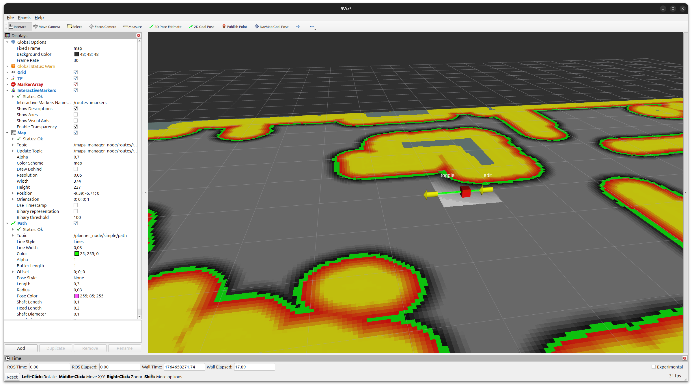
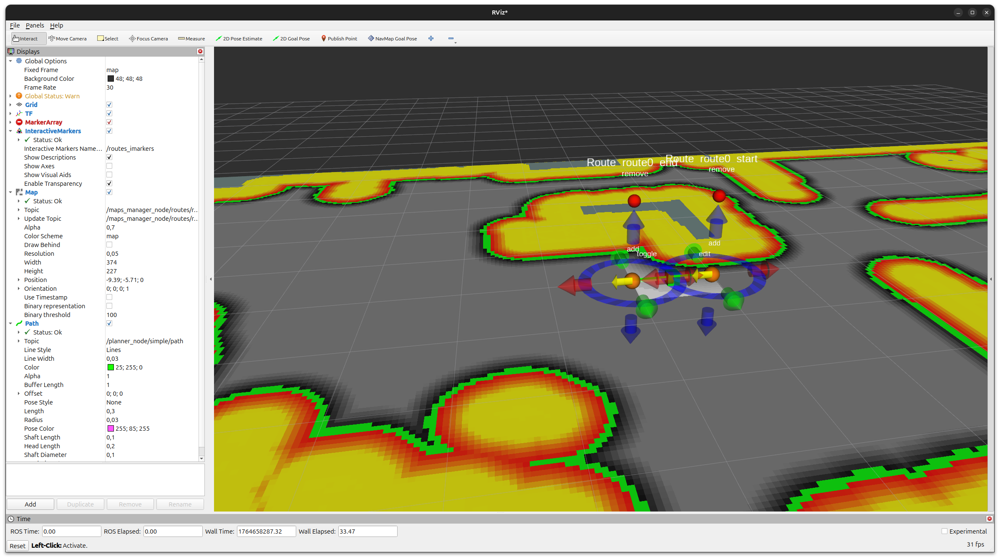
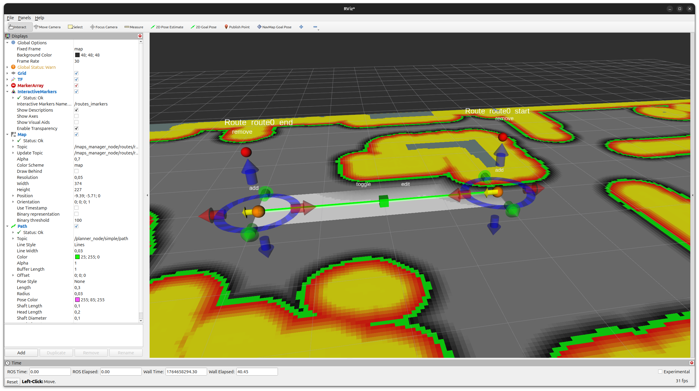
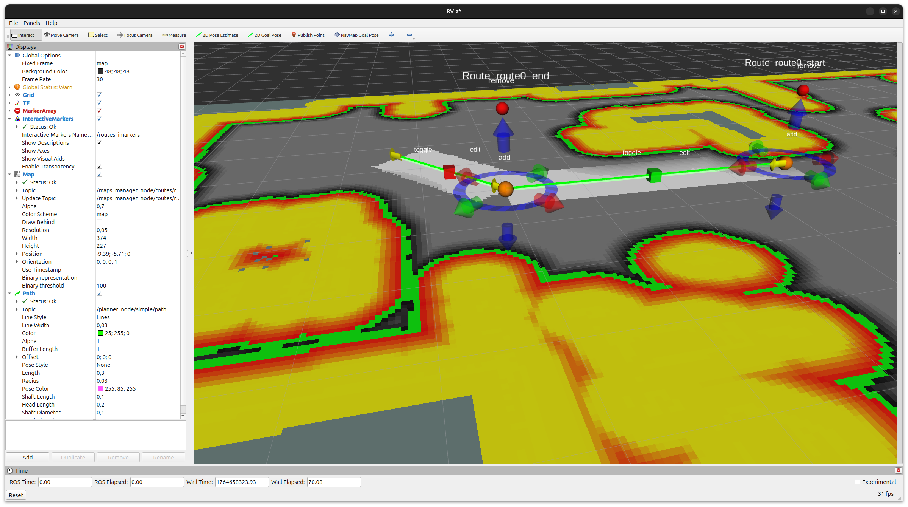
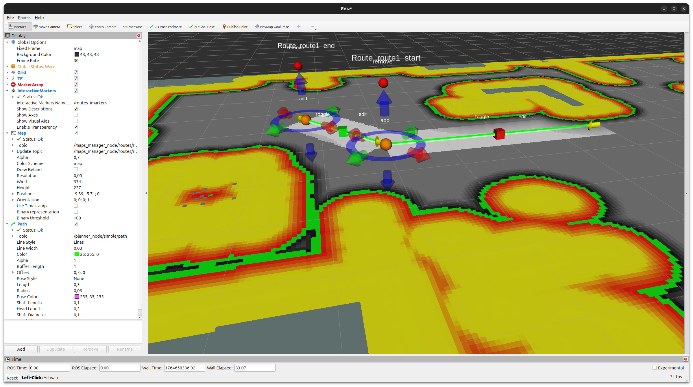

Using the Routes Maps Manager with Costmaps
This how-to describes how to create and use navigation routes with
easynav_routes_maps_manager and how to constrain a 2D costmap
around those routes using the easynav_routes_maps_manager/RoutesCostmapFilter
plugin.
The process is split in two main steps:
Creating routes interactively and saving them to a YAML file.
Using the saved routes in a full navigation stack so that the costmap is filtered to keep the robot close to the defined routes.
This how-to uses the Kobuki PlayGround, which ships
the configurations used below (params/routes.params.yaml and
params/costmap.rpp.routed.params.yaml) and a set of routes for its world
(maps/routes_1.yaml). Build EasyNav and the PlayGround as described in
Getting Started.
1) Creating routes
In this first step only the maps manager matters: a costmap maps manager providing the 2D map, and a routes maps manager with the routes costmap filter enabled. All other components (controller, planner, localizer) use dummy plugins, since we only care about editing and saving the routes.
Example parameters file
Below is the maps_manager_node section of a minimal parameters file focused on costmap and
routes. Copy params/routes.params.yaml of the Kobuki PlayGround and remove package and
map_path_file under routes to start from scratch (as is, it loads
maps/routes_1.yaml to edit those routes):
maps_manager_node:
ros__parameters:
use_sim_time: true
map_types: [costmap, routes]
routes:
freq: 10.0
plugin: easynav_routes_maps_manager/RoutesMapsManager
filters: [routes_costmap]
routes_costmap:
plugin: easynav_routes_maps_manager/RoutesCostmapFilter
min_cost: 50
route_width: 0.5
costmap:
freq: 10.0
plugin: easynav_costmap_maps_manager/CostmapMapsManager
package: easynav_playground_kobuki
map_path_file: maps/home2.yaml
filters: [obstacles, inflation]
obstacles:
plugin: easynav_costmap_maps_manager/CostmapMapsManager/ObstaclesFilter
inflation:
plugin: easynav_costmap_maps_manager/CostmapMapsManager/InflationFilter
inflation_radius: 1.3
cost_scaling_factor: 3.0
Key points:
The
costmapblock is configured as in a normal EasyNav scenario and provides the 2D map on which the routes will be drawn.The
routesblock enables theRoutesMapsManagerplugin and theRoutesCostmapFilterfilter. In this phase we mainly care about seeing the effect of the routes corridor on the costmap while editing the routes.No
packageormap_path_fileare provided underroutes. In this case the routes manager starts with a single default segment from(0, 0, 0)to(1, 0, 0)in the map frame, and saves the routes to/tmp/routes.yaml.map_path_filemay also be an absolute path, withoutpackage.
Running the maps manager
Start the simulation, EasyNav with this parameter file, and RViz2:
ros2 launch easynav_playground_kobuki easynav_costmap_mapping.launch.yaml \
params_file:=/path/to/my_routes.params.yaml \
rviz_config:=$(ros2 pkg prefix easynav_playground_kobuki)/share/easynav_playground_kobuki/rviz/easynav_costmap_routed.rviz
You should see:
The static and dynamic costmaps published by the costmap maps manager.
A single straight route segment (line + arrow) corresponding to the default route.
Editing routes with interactive markers
The following sequence illustrates how to edit and extend routes using the interactive markers published by the routes maps manager.
Step 0 – initial default segment


Figure 1 RViz2 just after starting the maps manager with no routes file:
a single default segment from (0, 0, 0) to (1, 0, 0) is shown.
When the routes maps manager starts without a configured routes file, it creates a single default segment in the map frame. In RViz2 you should see this straight segment (line + arrow) over the costmap.
Step 1 – enabling the edit markers


Figure 2 Clicking the green box enables the interactive markers for that segment.
The routes manager publishes interactive markers for editing the start
and end points of each segment and for adding/removing segments. In RViz2,
add an “Interactive Markers” display and select the server routes_imarkers
(<plugin name>_imarkers).
Click the green box associated with the segment to toggle edit mode on. When edit mode is enabled, RViz2 displays interactive markers on the segment endpoints:
Move arrows to translate an endpoint along each axis.
Rotation rings to rotate the endpoint pose.
The green box itself acts as an edit toggle for that segment.
Step 2 – moving the segment endpoint


Figure 3 Using the red arrow handle to move the end of the segment.
Use the red arrow of the interactive marker to drag the end of the segment to the desired position. You can use this to align the route with a corridor or path on the costmap. The costmap corridor updated by the RoutesCostmapFilter will move accordingly.
Step 3 – changing orientation and adding a new segment


Figure 4 After rotating the endpoint and clicking the orange sphere, a new segment is created.
Rotate the endpoint so that its arrow points towards where you want the next segment to go. Then click the orange sphere near the end of the segment:
The orange sphere is the “add segment” button.
Clicking it creates a new segment chained from the current one, starting at the edited endpoint and following its orientation.
This lets you build a multi-segment route step by step.
Step 4 – switching which segment is being edited


Figure 5 Toggling edit mode off for the first segment and on for the newly created one.
Once you have created multiple segments, you can choose which one is currently editable:
Click the edit box on a segment to toggle its edit mode on or off.
In this example, we disable editing on the first segment and enable it on the newly created segment.
From here you can repeat the same operations (move endpoint, rotate, use the orange sphere to add more segments) to extend the route as needed. To remove a segment, use the red box associated with that segment, which acts as a “delete segment” button.
Saving routes to a YAML file
Once you are satisfied with your route layout, you can persist it to a
YAML file using the save_routes service provided by the routes maps
manager.
Call the service with:
ros2 service call /maps_manager_node/routes/save_routes std_srvs/srv/Trigger {}
If routes.package and routes.map_path_file are configured, the routes are written back to
that YAML file, in the share directory of the package (with colcon build --symlink-install,
that is the file in your source tree), following the format described in the
easynav_routes_maps_manager README.
If they are not configured (as in the minimal example above), they are written to
/tmp/routes.yaml: copy it into a package and load it by setting package and
map_path_file.
Routes can also be replaced at runtime by publishing an
easynav_routes_maps_manager/msg/RoutesMap on /maps_manager_node/routes/incoming_routes.